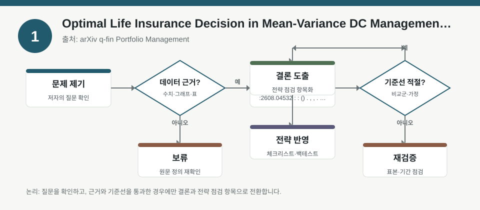
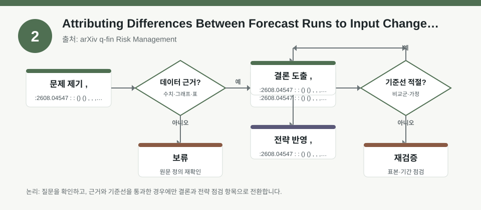
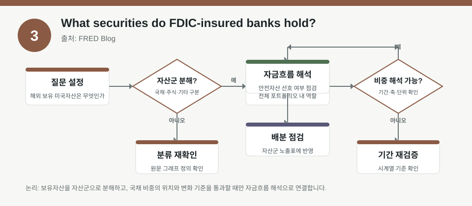

핵심 요약
- 결론: 이번 자료들은 모두 “예측 결과”보다 “입력 가정, 리스크 노출, 포트폴리오 구성 변화”를 먼저 점검해야 한다는 점을 보여줍니다.
- 원칙: 숫자·비중·민감도는 메타데이터만으로 확정하지 말고, 원문에서 시나리오·가정·표본 범위를 확인해야 합니다.
주목할 자료
| 번호 | 자료 | 출처 | 원문 | 핵심 내용 | 데이터 포인트 | 리스크/한계 |
|---|---|---|---|---|---|---|
| 1 | Optimal Life Insurance Decision in Mean-Variance DC Management with Mortality Improvements | arXiv q-fin Portfolio Management | 원문 보기 | 확정기여형 연금의 자산·보험 의사결정을 평균-분산 틀에서 다루며, 금리·기여금·사망률 개선을 함께 반영합니다. | 금리 민감도, 주식/채권 배분, 사망률 가정 | 실제 수치와 정책 제약은 원문 수식·시나리오 확인 필요 |
| 2 | Attributing Differences Between Forecast Runs to Input Changes, With Applications to CCAR and CECL Exercises | arXiv q-fin Risk Management | 원문 보기 | CCAR·CECL 같은 규제형 예측에서 실행 간 결과 차이를 입력 변화와 모델 변화로 분해하는 방법을 다룹니다. | 포트폴리오 데이터, 거시 시나리오, 모델 사양, 경영조정 | 입력 변경 귀속 규칙과 검증 표본은 원문에서 확인 필요 |
| 3 | What securities do FDIC-insured banks hold? | FRED Blog | 원문 보기 | FDIC 보험 은행의 보유 증권 구성을 통해 은행 자산 배분과 금리 민감도를 읽을 수 있게 합니다. | MBS 비중, 은행 증권 포트폴리오, 자산건전성 | 비중 수치와 기간별 변화는 원문 데이터 표에서 검증 필요 |
자료별 상세
1. Optimal Life Insurance Decision in Mean-Variance DC Management with Mortality Improvements

- 핵심: 확정기여형 연금의 자산배분과 보험결정을 함께 놓고, 금리·기여금·사망률 개선이 효용과 위험의 균형에 미치는 영향을 분석합니다.
- 데이터 포인트: 평균-분산 프레임이므로 변동성, 금리 경로, 사망률 가정이 결과를 좌우합니다.
- 리스크: 주식·채권 비중의 최적값, 금리 모형, mortality improvement 반영 방식은 원문 설정을 확인해야 합니다.
- 투자전략 반영 예시: 한국 투자자는 KOSPI 성장주와 금리 민감 업종, KOSDAQ 고변동 자산의 비중을 점검할 때 금리·변동성 가정이 바뀌면 결과도 달라진다는 점을 체크리스트에 넣을 수 있습니다.
- 실행 예시: “금리 상승·하락, 변동성 확대, 기대수명 변화” 3개 시나리오에서 자산배분 메모를 남기고, 각 시나리오별 노출 변화만 비교하는 방식으로 기록할 수 있습니다.
2. Attributing Differences Between Forecast Runs to Input Changes, With Applications to CCAR and CECL Exercises

- 핵심: 예측 결과가 달라졌을 때 그 원인이 데이터 입력인지, 거시 시나리오인지, 모델 구조인지, 관리 조정인지 분해해 설명하려는 자료입니다.
- 데이터 포인트: CCAR·CECL에서는 포트폴리오 데이터, macro scenario, model spec, management adjustment가 모두 결과에 영향을 줍니다.
- 리스크: 어떤 차이를 “입력 변화”로 귀속할지의 규칙과 예외 처리, 그리고 검증 데이터 범위는 원문에서 확인해야 합니다.
- 투자전략 반영 예시: 한국 투자자는 은행·보험·금융주를 볼 때 충당금, 부동산 익스포저, 환율 민감도, 경기 둔화 시나리오가 무엇 때문에 변했는지 구분해 보는 점검표로 활용할 수 있습니다.
- 실행 예시: 동일 포트폴리오에 대해 “입력만 변경 / 시나리오만 변경 / 모델만 변경” 3회 백테스트를 나눠 돌리고 결과 차이를 기록하면, 예측 오차의 원인을 구조적으로 확인할 수 있습니다.
3. What securities do FDIC-insured banks hold?

- 핵심: FDIC 보험 은행이 어떤 증권을 보유하는지 보여주며, 은행권의 자산 구성과 금리 리스크 노출을 읽는 데 도움을 줍니다.
- 데이터 포인트: 메타데이터상 모기지담보증권(MBS)이 절반을 넘는다고 요약되지만, 정확한 비중과 추세는 원문 표로 확인해야 합니다.
- 리스크: 은행별 차이, 분기별 변화, 보유 목적별 분류는 메타데이터만으로 확정할 수 없습니다.
- 투자전략 반영 예시: 한국 투자자는 국내 은행·보험 업종의 채권/증권 보유가 금리 상승기 손익에 어떻게 연결되는지, 그리고 KOSPI 금융섹터 비중을 점검할 때 금리·신용 스프레드를 함께 체크할 수 있습니다.
- 실행 예시: 분기별로 “MBS, 국채, 회사채, 기타 증권” 비중을 따로 기록하고, 금리 급변 구간에서 평가손익과 자본비율 변화를 함께 메모하는 체크리스트를 만들 수 있습니다.
팩터·리스크·포트폴리오 관점
- 핵심: 세 자료 모두 금리, 변동성, 신용, 규제, 인구통계 가정이 포트폴리오 결과를 크게 바꿀 수 있음을 시사합니다.
- 검수: 숫자 해석은 원문 모델식, 시나리오 정의, 데이터 기간, 제외 기준을 확인한 뒤에만 해야 하며, 메타데이터의 요약값은 검증 전까지 참고 수준으로 두어야 합니다.
정리
- 결론: 한국 주식 투자자 관점에서는 종목 선택보다 먼저 섹터 노출, 금리·환율·신용 민감도, 그리고 가정 변경에 따른 결과 변동성을 점검하는 것이 핵심입니다.
- 다음 확인: 원문에서 각 자료의 시나리오, 모형 가정, 표본 기간, 그리고 결과의 민감도 표를 확인해 숫자 해석 가능 범위를 좁혀야 합니다.